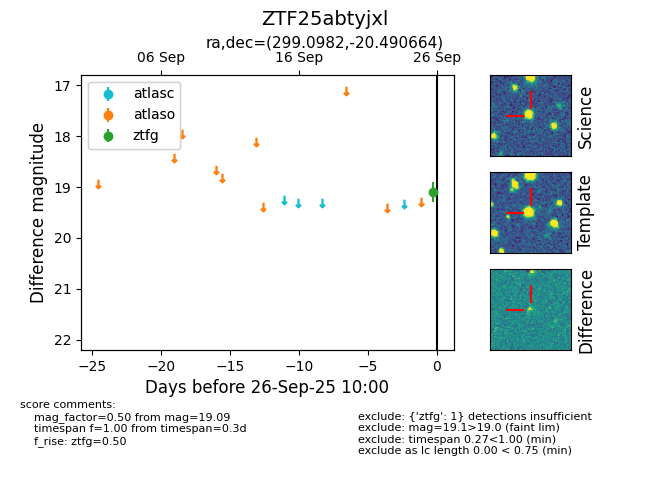

FINK: ZTF25abtyjxl
Lasair: ZTF25abtyjxl
ALeRCE: ZTF25abtyjxl
ZTF25abtyjxl (ztf,fink)
equatorial (ra, dec) = (299.0982,-20.49066)
galactic (l, b) = (20.8749,-23.12569)

last ztfg=19.09
1 ztfg detections